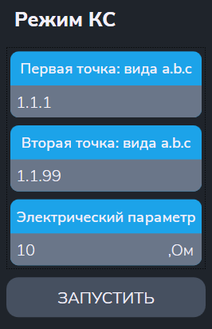

Утилита "Режим КС"
Утилита измеряет сопротивление и определяет погрешность измерения сопротивления с помощью мультиметра в режиме омметра.
- "Начальная точка a.b.c" и "Конечная точка a.b.c" - входы АСК для подключения выводов магазина эталонных сопротивлений;
- "Электрический параметр" - задание нужного эталонного сопротивления (в Ом).

После ввода параметров меню автоматически выполняются следующие действия:
- Начальная заданная точка подключается к шине A1;
- Конечная заданная точка подключается к шине B1;
- Вольтметр: устанавливается режим измерения и подключение к шинам A1,B1;
- Производится измерение;
-
В протокол выводится сообщения вида:
$TST1 Rд.б=100 Ом+-5 Ом (5.00%) Rизм=100.00 Ом Погр=0.000Ом
$TST1 Измерений:1 Все норма ПОГРmin=0 ПОГРmax=+0.000Ом